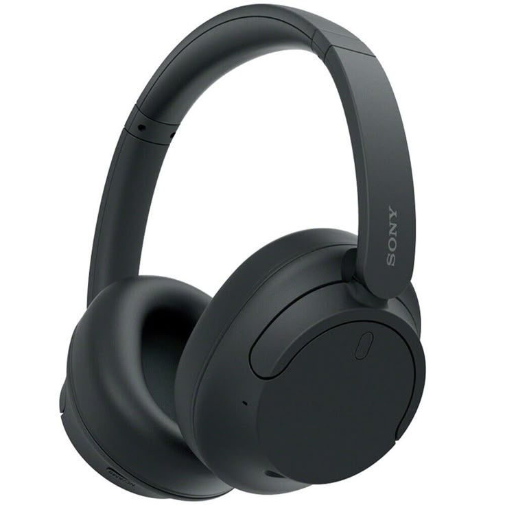

Noise-Cancelling Headphones
These headphones were essential for late-night studying in noisy dorms and for canceling out the bustle of campus. They became my go-to focus tool: playlists for concentration, white-noise sessions for writing, and a simple way to carve out private time when the world felt loud.
Why I kept these
- Blocks external noise for better focus
- Comfortable for long study sessions
- Portable and durable — survived a few drops